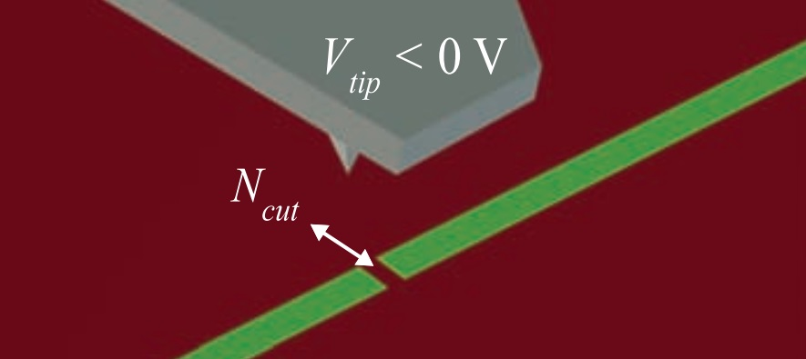
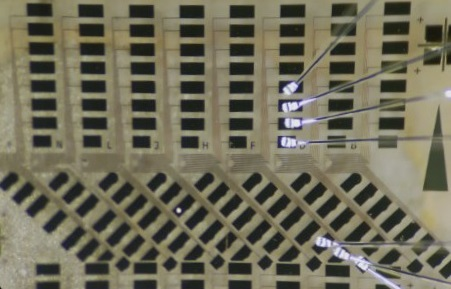

-
Build a cryogenic measurement system

-
(1) Laser Interferometer System in AFM:
Built a laser interferometer system to measure the deflection of the cantilever. The light from the fiber is reflected back into the fiber and interacts with the light reflected at the end of the fiber. The deflection is characterized by the intensity of the signal. The system is properly optimized with the resolution less than 100pm.
(2) Installation and test of a Dilution Refrigerator:
The refrigerator was manufactured by Leiden and I participated in the installation procedure.
(3) Filter Stages:
Fabricated sixteen sliver-epoxy filters with attenuation more than 100db for frequency above 10kHz. The filters isolate the high-frequency noise and make it possible to cool down the electron temperature to less than 10mk. The filters are mounted on the filter stages produced by oxygen-free copper designed by myself with SolidWorks.
(4) Control Program:
Wrote a control program by LabVIEW to control AFM and acquire real-time measuring data from data acquisition card. All the steps in manipulating an AFM can be controlled in my program including lowering the tips and scanning the samples. The measurement part can monitor the conductivity of the samples.
-
(1) Laser Interferometer System in AFM:
-
Oxide Nanoelectronics
-
(1) Atom force microscopy lithography technique:
I manipulated AFM with a conducting AFM probe to control over the metal-insulator transition at scales of <4nm based on LaAlO3/SrTiO3 interface. The technique enable me to further create some quantum devices such as tunnel junctions and field-effect transistors.
(2) Nanofabrication:
 Took the training of the USTC Center for Micro- and Nanoscale Research and Fabrication. I patterned leads and electrodes for my LaAlO3/SrTiO3 samples using photolithography, etching and depositing technologies.
(3) Electronic measurement system:
For hardware, I used data acquisition card NI PXI-4461 and pre-amplifier NI PXI-4022 to acquire the signal of voltage and current. The hardware is linked to computer and programmed by LabVIEW to monitor the conductance of the samples to test the electrical characteristic of the devices.
-
(1) Atom force microscopy lithography technique: